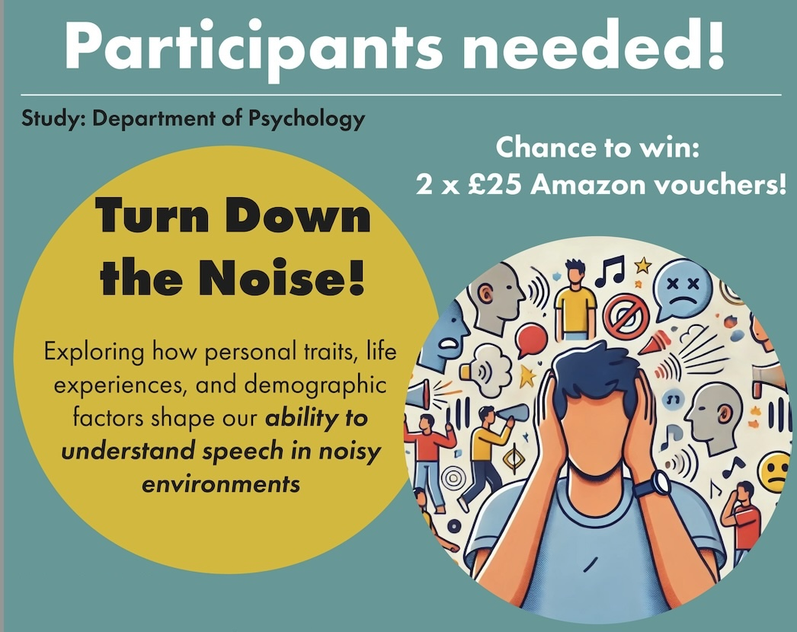

Current Studies
Student project: How do we hear speech in noisy environments?
What is the study about?
At Royal Holloway, all students in their final year conduct a research study. This year, my project team is exploring how personal traits, experiences and demographic factors influence our ability to understand speech in noisy environments.
If you choose to participate, you will complete a series of online surveys and tasks, like listening to speech in background noise.
This study will take approximately 35 minutes and you will be entered into a chance to win one of two £25 Amazon vouchers.
Am I eligible to take part?
You are eligible for the study if you are over 18 years old, speak English fluently, and have no known hearing impairments or do not use a hearing aid.
For this study, you will need a desktop/laptop with Google Chrome as the web browser. It will not work on other devices or browsers. You will also need headphones. If you would like to participate, click the button below to start the study!
Pitch and Rhythm in Speech and Music (PRiSM) Project
We are currently seeking adult participants (aged 18-35) for a project exploring music and language development. In this study, you will hear a series of musical excerpts and spoken phrases and be asked to place them into categories. The study will last up to 1 hour and you will receive a £10 for their participation. If you are interested in finding more about this study, please contact the research team!
This work is supported by the Society for Education, Music & Psychology Research.